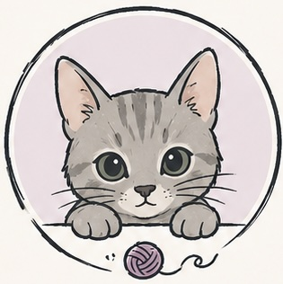

Write it like a script. Ship it like C.
Eskiu is a self-hosting systems language. LLVM, explicit memory, direct C interop and no garbage collector, with an eskiuc run that feels like Python.

At ReactVision, with ≈85% less memory in ViroReact, and on a Nintendo 3DS.
Familiar on the surface.
Sum types, checked to the last case
An enum carries data per variant. Leave a case out of a match and it does not compile.
match parse_port("8080") { Port(p) -> printf("listening on :%d\n", p);serve(p); InvalidRange(n) -> printf("%d out of range\n", n);warn(n); NotANumber -> printf("not a number\n");fail(); }
Vector maths that reads like maths
Bounded generics are monomorphised; operator overloads resolve by operand type and cost nothing at run time.
V3 operator +(V3 a, V3 b) { ... } V3 operator *(V3 v, float s) { ... } let mid: V3 = (a + b) * 0.5; // direct calls
async, await and typed channels
One reactor on kqueue, epoll or WSAPoll, so the same networking code runs on Linux, macOS and Windows.
async int sum_squares(Chan<int>* ch) { let a: int = await Chan_recv(ch); let b: int = await Chan_recv(ch); return a + b; }
The compiler is written in Eskiu
Self-hosting since v0.3.0. The whole pipeline reproduces its own output through a 3-stage bootstrap fixpoint.
How it bootstraps →selfhost/ lexer → preprocessor → parser → sema → codegen → LLVM stage 1 → 2 → 3 ✓ fixpoint
Try it in the browser.
Edit the program and run it. The server compiles it with LLVM through the same eskiuc run.
STDOUT
Sandboxed: no network, time- and memory-limited, output capped.
The Book of Eskiu
From Hello, Eskiu to bare-metal programming, async and self-hosting.